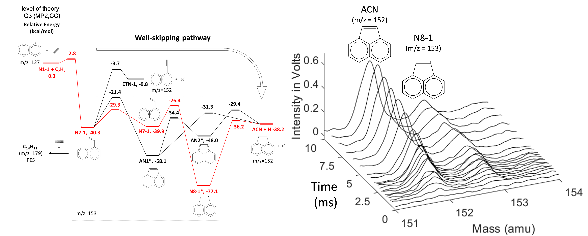

Physical Chemistry
Chemical Kinetics • PhotochemistryBefore entering Exoplanet Science, I did my Ph.D. in Physical Chemistry in the Department of Chemical Engineering, where I studied fundamental Chemical Kinetics at the molecular level. My research combines two complementary approaches: Quantum Chemistry and Laboratory Chemical Dynamics. By calculating how molecules react from first principles and directly measuring elementary reactions in the laboratory, I seek to understand fundamental laws of Physical Chemistry.
Theoretical & Experimental Chemical Kinetics: From Two- to Three-Ring PAHs

Polycyclic Aromatic Hydrocarbons (PAHs) are important precursors to soot and undesirable byproducts of fuel combustion.
The oil industries, therefore, have a strong interest in understanding and ultimately suppressing their formation, as PAHs contribute to pollutant emissions, inefficient combustion, and global warming.
I investigated PAH growth using first-principles Quantum Chemistry and
a "unique" experimental apparatus combining Laser Absorption Spectroscopy (LAS) with
Vacuum Ultraviolet Photoionization Time-of-Flight Mass Spectrometry (VUV-PI-ToF-MS) (shown in pictures above). Using this
LAS/VUV-PI-ToF-MS system, I directly measured, for the first time, the time-dependent formation of
three-ring PAHs (C14H10) from the two-ring PAH naphthalene (C10H8) through the Hydrogen-Abstraction/Acetylene-Addition (HACA) mechanism.

Yang et al., 2021, Phys. Chem. Chem. Phys.
The laboratory measurements showed excellent agreement with the first-principles theoretical predictions, directly connecting Quantum Mechanics with the experimentally observed growth of complex molecules. To date, this remains the largest PAH system for which an elementary reaction rate coefficient has been directly measured in the laboratory, reflecting the substantial experimental challenges of probing elementary kinetics as molecular size and complexity increase.red in the laboratory.